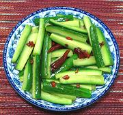

|
Cucumber Salad, SichuanChina - Sichuan - Qiang Huang Gua | ||||
| Makes: Effort: Sched: DoAhead: |
1-1/2 # ** 40 min Yes |
This appetizer salad is an attractive departure from the usual vinegared cucumbers. Despite the name "Sichuan" and the number of chilis, it is actually not at all hot, unless you make it so deliberately. It can be made a day ahead. | |||
|
1-1/2 1 8 2 1-1/2 1/2 |
# t t T T |
Cucumbers (1) Salt Chilis, dried (2) Sichuan Peppercorns (3) Oil Sesame Oil, dark |
Make - (35 min - 10 min work)
|